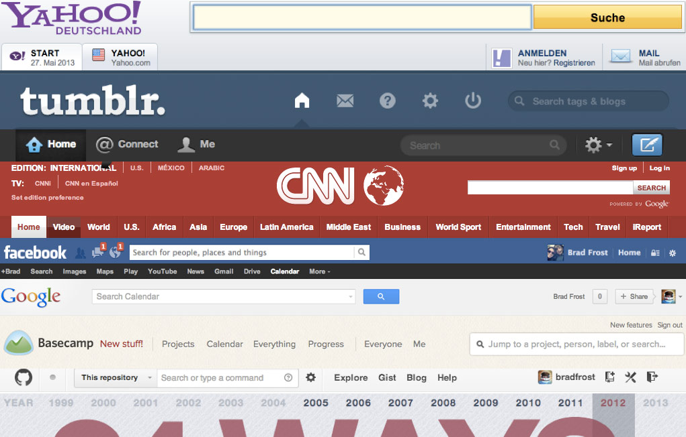
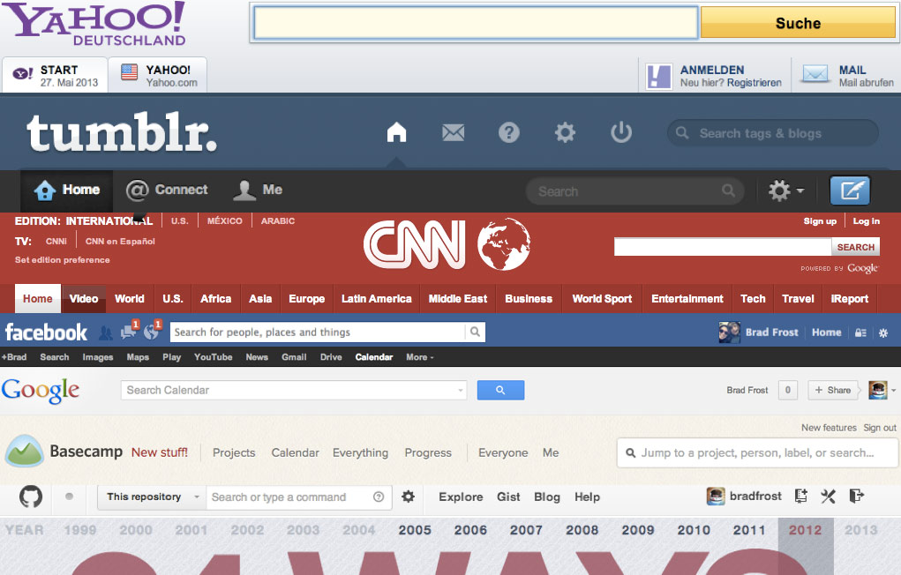

Getting 'atomic'
Atomic design is a methodology for creating design systems.
Brad Frost (http://bradfrost.com/)

We’re not designing pages, we’re designing systems of components.
Stephen Hay
Atoms
Atoms are the basic building blocks of matter. Applied to web interfaces, atoms are our HTML tags, such as a form label, an input or a button.

Molecules
Molecules are groups of atoms bonded together and are the smallest fundamental units of a compound.

Organisms
Organisms are groups of molecules joined together to form a relatively complex, distinct section of an interface.
 

Templates
Templates consist mostly of groups of organisms stitched together to form pages. It’s here where we start to see the design coming together and start seeing things like layout in action.

Pages
Pages are specific instances of templates. Here, placeholder content is replaced with real representative content to give an accurate depiction of what a user will ultimately see.

/